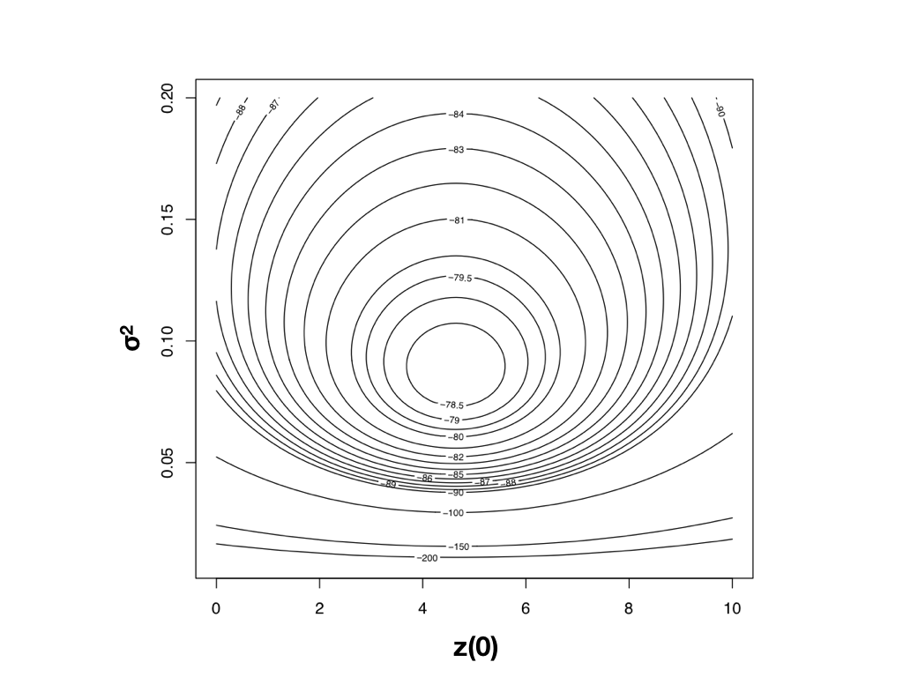
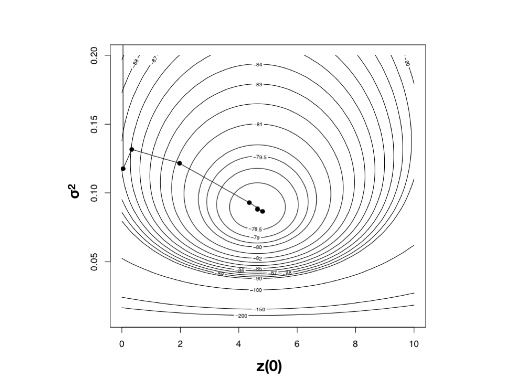

Brownian motion: the random walk
- The classic random walk: each step is in a random direction.
- Core idea:
- There is no bias towards any direction.
- Each step is independent of every other step.
- Steps occur in continuous time (not discrete generations).
- After many steps, the distribution of endpoints follows a normal distribution.
- The mean equals the starting value.
- The variance grows linearly with time.
Brownian motion: the rate parameter
- The evolutionary rate parameter $\sigma^2$ governs how much change per unit time occurs.
- After time $t$, the distribution of trait values is:
$$X(t) \sim N\!\left(X(0),\; \sigma^2 t\right)$$
- Higher $\sigma^2$ $\Rightarrow$ greater spread of values (more variance).
- But the mean remains at the starting value, regardless of $\sigma^2$.
Distribution of trait values after $t=10$ time units, starting at $X(0)=0$, for three different rates.
Brownian motion and genetics
- Brownian motion is mathematically very similar to genetic drift.
- When evolutionary change is neutral — traits changing only due to random luck:
- If a trait is influenced by many genes, each with small effect.
- And the character does not affect fitness.
- Then trait evolution approximates Brownian motion.
- But a trait evolving under BM is not necessarily neutral — at least three selection regimes also produce BM-like patterns (when selection is weak).
Brownian motion under selection
- Three regimes where selection produces a Brownian-like result (all assume selection is weak):
- 1. Fluctuating directional selection:
- The direction (and possibly strength) of selection varies randomly every generation.
- 2. Stabilizing selection with a moving optimum:
- The optimum itself moves randomly, and the population tracks it.
- 3. Genetic drift with weak selection:
- Selection is present but too weak relative to drift to produce a consistent directional trend.
- When selection is much stronger than drift, selection completely dominates and BM is no longer appropriate.
Brownian motion with a trend
- We are usually estimating the ancestral (root) value from an incomplete sample of extant values.
- If a trend is slow enough, how can we distinguish a shift in the mean from statistical noise?
- A BM model with a trend adds a drift parameter $\mu$:
$$X(t) \sim N\!\left(X(0) + \mu t,\; \sigma^2 t\right)$$
- Detecting trends requires either long time spans or strong trends relative to the rate of random change.
BM and phylogenetic trees
- We can "wind back the clock" to infer ancestral states on a tree under Brownian motion.
- This applies to other models too.
- These procedures generalise to multivariate distributions.
- Both univariate and multivariate approaches use the same BM framework.
- The shared branch lengths in a phylogeny define a variance-covariance matrix $\mathbf{C}$:
- Diagonal: total branch length from root to each tip (variance).
- Off-diagonal: shared branch length between pairs of tips (covariance).
Estimating Rates of Brownian Motion
Estimating rates using independent contrasts
- Each contrast is an amount of change, divided by the branch length.
- For a single trait, we can estimate the evolutionary rate under BM:
$$\hat{\sigma}^2_{PIC} = \frac{\sum s^2_{ij}}{n-1}$$
This estimates the variance of the (standardised) contrasts, which equals $\sigma^2$.
- Simple, direct, and computationally efficient.
Estimating rates with maximum likelihood
- BM tip states are drawn from a multivariate normal whose covariance matrix depends on the tree.
- The likelihood depends on two parameters: the rate $\sigma^2$ and the root state $\bar{z}(0)$.
- The ML estimate is the $(\sigma^2, \bar{z}(0))$ at the peak of this surface.

Likelihood surface for BM on mammal body mass (Garland 1992).
Harmon (2019) Phylogenetic Comparative Methods, Fig 4.3 (CC-BY-4.0).
Hill-climbing to the MLE
- Hill-climbing algorithms take iterative steps uphill toward the peak.
- On a smooth, unimodal surface (right), the algorithm converges in a handful of steps.
- Risk: getting trapped on local optima if the surface is rugged.
- Mitigations:
- Multiple random starting points.
- Simulated annealing.
- Bayesian MCMC (explores the full landscape).

Path of a Newton's-method optimiser climbing the BM likelihood surface (Garland 1992 mammal data).
Harmon (2019) Phylogenetic Comparative Methods, Fig 4.4 (CC-BY-4.0).
Restricted Maximum Likelihood (REML)
- A problem with ML: computing the full covariance matrix is expensive for large trees.
- REML maximises a likelihood function based on contrasts rather than the full data:
- Calculating contrasts is much faster than the full matrix computation.
- Ignores nuisance parameters like the root state.
- Generally considered to give better (less biased) estimates of variance parameters than standard ML.
- Widely used in phylogenetic comparative analyses.
Discussion
- If we can use the PIC method to estimate evolutionary rate, why did we also cover ML and Bayesian approaches?
- What are the arguments for log-transforming biological data before comparative analysis?
- Can you think of a few ways to decrease the risk of hill-climbing algorithms getting stuck on local optima?
- How would you decide whether Brownian motion is a reasonable model for a given trait?
Recommended Reading
- Chapter 8: Traits and Comparative Methods
- Chapter 3: Brownian Motion
- Chapter 4: Fitting Brownian Motion Models to Single Characters